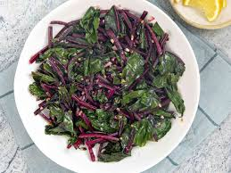

Beet Greens

Description
Did you know you can eat beet greens? Well, you can! The delicious and nutritious leaves make a fantastic side dish. Learn how to make perfect beet greens with this incredibly simple recipe.
Ingredients
- 2 bunches beet greens, stems removed
- 1 tablespoon extra-virgin olive oil, or to taste
- 2 cloves garlic, minced
- ¼ teaspoon crushed red pepper flakes (Optional)
- salt and freshly ground black pepper to taste
- 2 lemons, quartered
Steps
- Bring a large pot of lightly salted water to a boil. Add beet greens and cook, uncovered, until tender, about 2 minutes, and drain in a colander.
- Immediately immerse in ice water for several minutes to stop the cooking process.
- Once the greens are cold, drain well, and coarsely chop.
- Heat olive oil in a large skillet over medium heat. Stir in garlic and red pepper flakes; cook and stir until fragrant, about 1 minute. Stir in the chopped greens until coated, then season with salt and pepper. Cook just until greens are hot; 1 to 2 minutes. Serve with lemon wedges.
- Serve with lemon wedges.